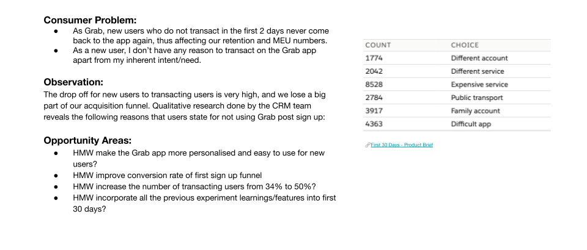
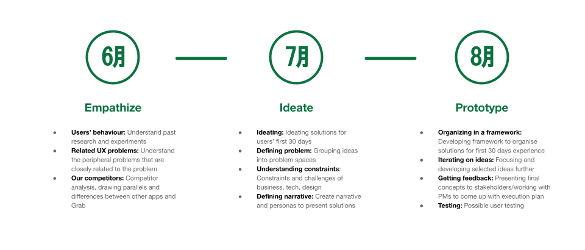
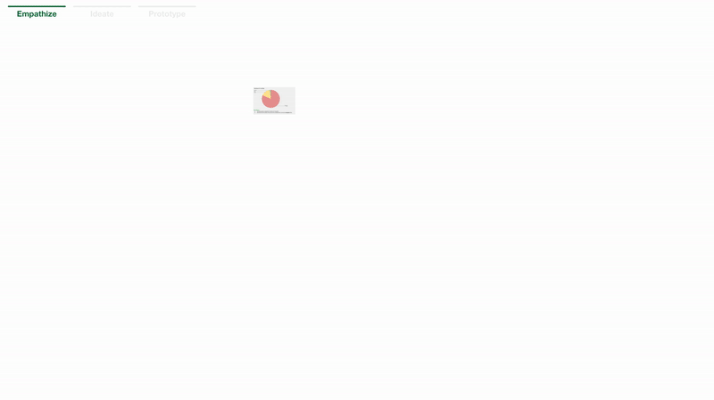
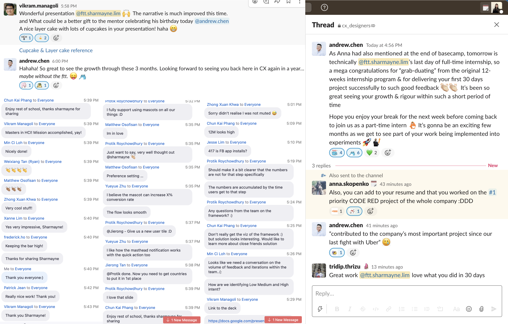

Project
Product Design@Grab
Part of the CX team at Southeast Asia's leading superapp 🚀
Categories
Product Design

Organisation
Role
Product Design Intern at the Consumer Experience team
Duration
Jun - Oct 2021
Description
Grab is a Nasdaq-listed Southeast Asian company that provides services ranging from transportation, deliveries, payments to insurance, all within its “super app”. It currently serves more than 187 million users in over 330 cities across eight Southeast Asian countries. I was given the opportunity to helm my own project to improve new users' first 30 days experience. In my 5 months, I worked in a cross-functional team with product managers, product analysts and engineers, and kickstarted a series of onboarding experiments that has an estimated impact of additional 70k users/month in total. I even had the rare opportunity to participate in Grab's internal hackathon (Grabathon 9.0) and won 3rd place, but I'll cover that here instead.
Overview
Throughout my 5 month internship at Grab, I was given the opportunity to work on a slew of different projects, starting with the First 30 Days Project, to working on specific problems identified through the First 30 Days Project, like Guest Browsing/Order, Contextual Help, Splash Screen Design Change, Gamified Profile Completion, and Tutorials.
First 30 Days Project

Product Brief
At the beginning of the internship, I was handed a product brief with a general one-pager on what the problem was. Taking this one-pager as a guide, I outlined a list of tasks and created a Gantt Chart to plan out what I would do for the next 3 months.
Timeline
I started with understanding past research and experiments as well as the peripheral problems that were closely related to the given problem in the brief. After gaining a better understanding of the specific problems, I went on to do a intensive competitor analysis, drawing parallels and differences with Grab while jotting down the smorgasbord of ideas that came along the way. After gaining inspiration from what's out there, I began drafting out personas for different types of users we had while developing the divergent ideas I had a little more. To consolidate all these ideas into a coherent narrative, I developed a framework to organize the ideas according to the different stages of users' onboarding. With the framework, shortlisting a few ideas from the drawing board to focus on was easier. After iterating on the selected ideas, I presented my designs to various stakeholders, from design, product management and engineering teams for feedback. However, user testing did not proceed as planned and instead, we broke down the ideas into small and quick experiments to test them out as we were under a "Code Red" period where the higher-ups were willing to give us (almost) full autonomy to try anything out to improve our numbers for sign-ups and transactions.
Chapter 1: Empathize
After perusing the decks of information and research on users, I identified a few key observations:
1. New users are not transacting: ~66% of new users go into stale sign up.
2. New users are dropping off: ~90% of new users never come back to the app after two days if they don't transact on the first day.
3. Low feed engagement: ~83% DAU do not interact with the feed on the homepage.
4. Sharing accounts/creation of new accounts: Many users in the Southeast Asian region frequently changed their numbers or share accounts with their family or friends.
Here are some more key statistics on our user funnel and a summary of key existing initiatives that we were carrying out to target the drop at each stage:

To figure out the reasons behind the significant drops at each stage, we did a deep dive by working with data analysts and user researchers. After much data collection and interviews with users, we pinpointed specific reasons for the lack of app installations and inertia for first transaction. Firstly, non-users are not downloading and installing Grab because the app size is one of the highest at about >300MB and many consumers in the SEA region do have enough storage to download the app. Moreover, some users have trouble signing up either because there are too many steps or users have no way of getting assistance when they face an issue during the sign-up process. In addition, these non-users have reflected that the app is either complicated or more expensive than other platforms or service providers.

Other than finding out from our data regarding what are the specific problems we could work on, we also looked at the bigger picture, charting a comparison of our MAU/Cumulative App Installs against other major apps used in SEA. With our regional ceiling total addressable market at 585 million and taking Facebook as benchmark, we had an estimated installation gap of 325 million.

We also identified a specific target group for our opportunities for growth and categorized these consumers into low, mid and high intent according to our interviews with non-users.

From the above data, we outlined a few HMW (How Might We) statements:
1. HMW improve conversion to first transaction?
2. HMW close installs gap and increase MAU?
3. HMW get users without immediate transactional intent to return to the app?
4. HMW increase engagement on the homepage for users with low intent of transaction?
Next, I analysed past new user experiments and summarised key learnings from them to inform our future explorations.

Last but not least, I did an in-depth competitor analysis of a range of mobile applications, from our direct competitors to indirect ones, to understand how they onboard users, what strategies they use to guide users to get to know the app, how they engage new users with interesting and personalised content, and how they encourage users to transact.
STEP 1
I visited the App Store, Play Store, and websites that rated or reviewed apps to find out what are the top performing apps in the various categories from superapp to food&drink to even investment.

STEP 2
After compiling all of these apps on an excel sheet, I proceeded to download all of them and play around with them, noting down those that were relevant for more in-depth analysis. Following this, I arranged all the screenshots on Figma, detailing all the learning points from each screenshot with suggestions how it can be applied to Grab.


STEP 3
After analysing all the screenshots and screen recordings I have taken, I proceeded to organize the data in tables for better consumption of the insights by my audience or anyone who was going to refer to my research.

STEP 4
In this process, I identified common themes and patterns across various competitors. Many of them employed creative onboarding, gamification, personalisation and community features as part of their strategies to engage users and motivate them to transact.


LEARNINGS
To sum up this first chapter, I gathered many valuable insights about the specific problems we were facing in terms of the new user experience. Moreover, it was eye-opening to witness how design is always placed against quantifiable metrics. Last but not least, analysing competitors, not just our direct competitors but also other apps that are not directly relevant, can bring about unexpected insights.
Chapter 2: Ideate

After empathizing with our users, analyzing our data and learning from our competitors, I engaged in divergent ideation, going wild with my designs based on all the pointers and sparks of inspiration I had taken down throughout the process of the first chapter. After ideating, I crafted user personas based on our user research and tried to fit the ideas in to create a coherent narrative. I first identified two different types of people from different demographics, with different behaviours, pains and gains, then developed customer journey maps for both of them.


However, as these personas are based on non-users, a group of people that we have limited data on, this had a possibility of misleading the team into assumptions about the problem space. In addition, as the ideas were kind of force-fitted in, it seemed rather random too.
LEARNINGS
To sum up this second chapter, I realized that developing personas and building a strong narrative can allow for divergent solutions to be presented in a coherent manner. However, in situations like these where there aren’t such clearly defined personas or archetypes, perhaps presenting the solutions in terms of the clearly defined problem areas might work better.
Chapter 3: Prototype

Before I went ahead with developing the ideas even further, I recapped all the problem areas and matched the solutions to each problem area. This allowed me to clearly identify three strategies to combat the problem areas.


After organizing the ideas according to the specific strategies, I took a step back and looked at the bigger picture, developing a framework to classify not only the current solutions I had but also future solutions for different stages of users' lifecycle and for users with different levels of transactional intent. Developing such a framework was a tall order, as it was extremely difficult to achieve a nice balance between simplicity and specificity.

After much feedback and many iterations, I reached a framework that categorized users into four stages: pre-sign up, early, medium and late; as well as three levels of transactional intent: high, medium and low.

The condensed version:

With this framework, I was able to easily craft a user flow as an example of how the different solutions could come into play. I identified a particular type of user--a new user (medium intent) who has downloaded Grab out of curiosity to check out what it has to offer, and then suggested solutions on how to get him/her to sign up, transact, continue coming back to Grab and transact more.


Check out the prototype here!
LEARNINGS
Rather than force-fitting solutions based on personas or archetypes, creating a structure to organize different solutions can show more possibilities rather than being prescriptive. However, coming up with an apt framework is hard, really hard. Also, besides the viability of a framework, visual design can help an audience better digest the heavy information. Last but not least, the ideal vision might not always be practical, hence changes need to be experimented in baby steps.
Last Chapter: Presentation
Throughout the entire journey of working on this project, I had the opportunity to present many times, to my CX team at our Thursday Basecamps, to product managers/analysts/engineers involved, at Camp 1 (with the design heads), and even at All-Hands (a very big meeting with many many people which was super intimidating). Although I was initially not very adept at presenting and articulating my ideas and process, these rounds of practice honed my presentation skills, and more importantly, my courage to speak up. After going through all these big, scary meetings, I realised there was nothing to be afraid of! Everyone was super nice, encouraging and gave constructive feedback to work and improve on!

Reflections

Interning at Grab was life-changing. I learnt so, so much and met so many wonderful people from really diverse backgrounds which were all very willing to share their experiences, insights and advice! I'm very grateful to have had the opportunity to work on so many important projects and improve the experience of our millions of users! Special thanks to my mentor Andrew and Vikram for their immense support, guidance and belief in me, without which, I wouldn't have been able to make it so far!